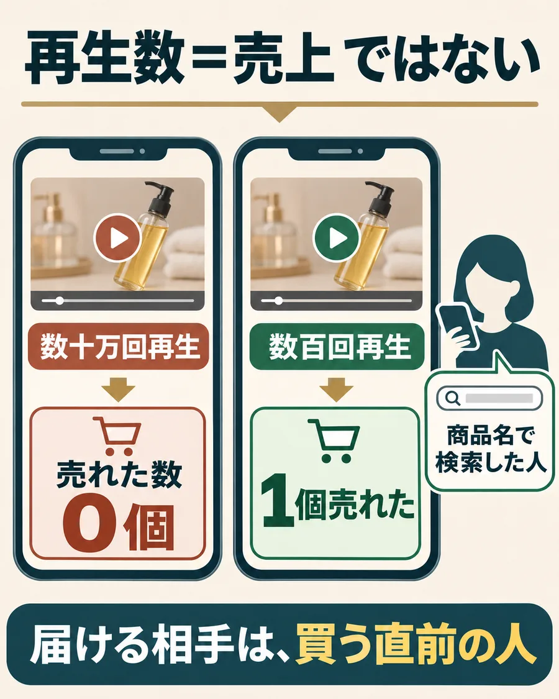
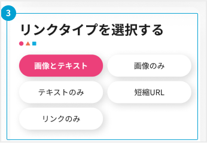

抜け道は、「バズを待たない」こと。
初収益が遠く感じるのって、「まずフォロワーを増やして、バズってから」と考えるからなんですよね。
でもAIアフィの現場では、こんなことが普通に起きています。

売上を決めるのは、再生数じゃなくて、「もう買おうか迷っている人」に届くかどうか。そこに届けば、フォロワーが少なくても売れます。
しかも1件の紹介料が高ければ、その1件がそのまま初収益になる。1件数十円をコツコツ積み上げなくていい。これが、抜け道です。
最初の1件を取りにいく、3つの狙い方。
- 1｜商品名で調べられている商品を選ぶ
商品名で検索して、紹介動画がいくつも出てくる商品は、すでに調べている人がいる証拠。買う直前の人って、商品名で探すんですよね。
- 2｜最初の一言で、商品名と迷いを言う
「このヘアオイル、気になって調べた人へ」のように、検索して見つけた人が手を止める入り方にします。
- 3｜1本で判断しない
どれが当たるかは、出してみるまで分からないです。だから同じ商品で、冒頭か見せ方だけ変えて数本出す。
この商品で始めていい？迷ったときの判断
調べられていて、手元で撮れる
商品名で紹介動画が出てくる。商品が手元にあり、紹介できる案件と自分のリンクもある。
迷っている人へ、一本作る撮れるが、案件が分からない
紹介料の対象になる商品か、まだ分からない。
下書きを保存し、案件とリンクを確認効果を盛らないと成り立たない
商品ページにない効果や、試していない使い心地は、AIが書いた文でも使わないでください。
言える事実だけで作るヘアオイルで、最初の一本の下書きを作る例
商品名で調べた人に向けて、一本作る。
例のヘアオイルは、100mlのポンプ式で、タオルで拭いた髪に使う商品です。
- このヘアオイル、気になって調べた人へ。買う前に見てほしいところだけ話します。使う映像：商品を手に取り、名前が読めるように映す。
- 使うのは、タオルで髪を拭いたあとです。使う映像：商品ページやパッケージの、使い方が書いてある所を映す。
- 100mlのポンプ式なので、片手で出せます。使う映像：ポンプを押して、手に出す手元。容量の表示も映す。
- 値段と詳しい使い方は、リンク先の商品ページで見てください。使う映像：自分の紹介リンクから開いた商品ページ。
最初の一言で、商品名で調べてきた人を止める。あとは、買う前に知りたい事実だけ見せればいい。盛らなくても、それで十分です。
公開までの5つの準備
- 紹介できる案件と、自分用リンクを確認
紹介料の対象になる購入、取消・返品の扱いを読んでおきます。自分のリンクを開いて、原稿と同じ商品が出るかも確かめてください。
クローズド案件は、扱っている窓口からしか紹介できません。リンクの仕組みだけ先に試すなら、下の楽天の練習を使ってください。
楽天で自分用リンクを作る練習を見る - 誰が、何に迷っているかを決める
この例なら、商品名で調べて「買おうか迷っている人」。その人に、使うタイミング、出し方、容量を伝えます。
決めること：誰が、買う前に何を知りたいか。
- セリフと映す素材をそろえる
商品は自分で撮ります。名前と容量の表示が読めるように、手元も映す。映せない効果や、自分がしていない体験は足さないでください。
- 原稿・映像・リンクを見直す
原稿の内容が商品ページと合うか、字幕が商品を隠していないか、自分のリンクで紹介した商品が出るか。広告・PRの表示も確認します。
- 公開する日と、数字を見る日を決める
公開から何日後に数字を見るか、先に決めておきます。承認された件数は、結果が出てから追記すればOKです。
練習：公開の紹介サービスで、自分用リンクを作る
登録とリンク作成の流れだけ先に体験したい人向けです。楽天は誰でも使えますが料率が低いので、あくまで練習。手持ちの商品で進めてください。
- 公式のはじめ方を開く。楽天IDがあればログイン、なければ無料の楽天会員登録から。画面に出る利用条件を確認します。
- 公式のリンク作成ガイドにある「利用サイトの登録」へ。紹介に使う公開済みSNSなどを登録します。
- 楽天アフィリエイトのキーワード・URL検索で、実際に手元にある商品の名前や型番を検索。同じ商品を選んで「リンクを作成」を開きます。見つからない・紹介対象でない場合は、別の手持ち商品で試します。
- 「商品リンクを作成」で商品と料率を確認。「短縮URL」を選び、表示されたURLをコピーして自分用リンクを取得します。
- 原稿・映像・リンク先の商品が同じか確認。公式のSNS掲載例を見て、使うSNSでリンクを置く場所と必要な表示を確かめます。
楽天では、LINE・DM・メールなど私信でリンクを送るのはNGです。
実際に投稿するときは、広告だと分かるように「PR」などの表示を添えます。表示が必要となる条件は、楽天公式の広告表示ガイドで確認できます。

終わった準備にチェックを入れる。
準備が済んだ項目に印を付けると、次にする作業がわかります。
一本を出した後の見直し方も見る
2本目で変えるのは、最初の一言だけ。
同じヘアオイルで、2本目を作る場合です。
商品と映像はそのままで、最初の一言だけ変える。全部変えると、どこが効いたのか分からなくなるので。
商品名で調べられている商品を一つ選んで、迷っている人に向けた一本を作る。バズを待つより、そのほうが最初の1件にずっと近いです。